The sum of the angles in a triangle is \(180\degree\text{.}\)
A right triangle has one angle of \(90\degree\text{.}\)
All of the angles of an equilateral triangle are equal.
The base angles of an isosceles triangle are equal.
Vertical angles are equal.
If parallel lines are intersected by a transversal, the alternate interior angles are equal. Corresponding angles are also equal.
Two triangles are congruent if they have exactly the same size and shape.
The altitude of an equilateral triangle divides it into two congruent right triangles.
In a \(30\degree-60\degree-90\degree\) right triangle, the leg opposite the \(30\degree\) angle is half the length of the hypotenuse.
Two triangles are similar if they have the same shape but not necessarily the same size. The corresponding angles are equal, and the corresponding sides are proportional.
Similar Triangles.
Two triangles are similar if either
their corresponding angles are equal, or
their corresponding sides are proportional.
If two right triangles have one pair of corresponding acute angles with the same measure, then the triangles are similar.
Distance Formula.
The distance \(d\) between two points \(P_{1}(x_1, y_1)\) and \(P_{2}(x_2, y_2)\) is
Any number that can be written as a quotient of two integers \(\dfrac{a}{b},~~ b\not=0,~~\text{,}\) is called a rational number. The decimal form of a rational number is either a terminating decimal or a repeating decimal.
An irrational number is one that cannot be written as a quotient of two integers \(\dfrac{a}{b},~~ b\not=0,~~\text{.}\) We cannot write down an exact decimal equivalent for an irrational number.
A circle is the set of all points in a plane that lie at a given distance, called the radius, from a fixed point called the center.
Circle.
The equation for a circle of radius \(r\) centered at the origin is
\begin{equation*}
x^2+y^2=r^2
\end{equation*}
The circle \(x^2 + y^2 = 1\text{,}\) which is centered at the origin and has radius 1 unit, is called the unit circle.
Circumference of a Circle.
The circumference of a circle of radius \(r\) is given by
\begin{equation*}
C=2\pi r
\end{equation*}
Area of a Circle.
The area of a circle of radius \(r\) is given by
\begin{equation*}
A=\pi r^2
\end{equation*}
ExercisesChapter 1 Review Problems
Exercise Group.
For Problems 1–4, sketch the triangle described.
1.
An isosceles triangle with vertex angle \(100\degree\)
2.
An isosceles triangle with base angles of \(75\degree\)
3.
A scalene right triangle
4.
A scalene triangle with one obtuse angle
Exercise Group.
For Problems 5-–16, find the unknown angles.
5.
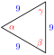
6.
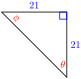
7.
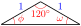
8.
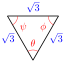
9.
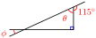
10.
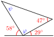
11.
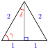
12.
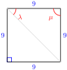
13.
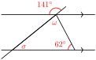
14.
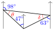
15.
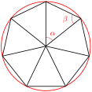
16.
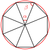
Exercise Group.
In Problems 17 and 18, name two congruent triangles and find the unknown quantities.
17.
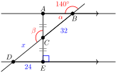
18.
\(PQRS\) is a square
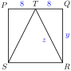
Exercise Group.
In Problems 19–22, are the pairs of triangles are similar? Explain why or why not.
19.
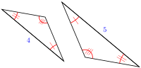
20.
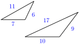
21.
22.
Exercise Group.
In Problems 23–26, find the unknown side.
23.
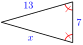
24.
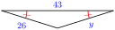
25.
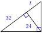
26.
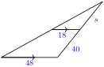
Exercise Group.
In Problems 27–34, solve for \(y\) in terms of \(x\text{.}\)
27.
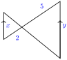
28.
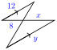
29.
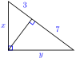
30.
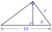
31.
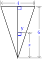
32.
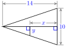
33.
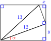
34.
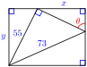
Exercise Group.
In Problems 35 and 36, find angle \(\alpha\text{.}\) The gray lines are horizontal.
35.
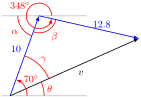
36.
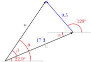
Exercise Group.
For Problems 37–40, make a sketch showing similar triangles, write a proportion, and solve.
37.
A 6-foot man stands 12 feet from a lamppost. His shadow is 9 feet long. How tall is the lamppost?
38.
Judy is observing the Mr. Freeze roller coaster from a safe distance of 1000 feet. She notices that she can see the reflection of the highest point of the roller coaster in a puddle of water. Judy is 23.5 feet from that point in the puddle. If Judy is 5feet 3 inches tall, how tall is the roller coaster?
39.
A florist fits a cylindrical piece of foam into a conical vase that is 10 inches high and measures 8 inches across the top, as shown in the figure. If the radius of the foam cylinder is 2 inches, how tall should it be just to reach the top of the vase?
40.
To measure the distance across the river shown in the figure, stand at \(A\) and sight across the river to a convenient landmark at \(B\text{.}\) Then measure the distances \(AC\text{,}\)\(CD\text{,}\) and \(DE\text{.}\) If \(AC=20\) feet, \(CD=13\) feet, and \(DE=58\) feet, how wide is the river?
Exercise Group.
For Problems 41–44, sketch a diagram on graph paper, then solve the problem.
41.
Show that the rectangle with vertices \((-4,1), (2,6), (7,0)\) and \((1,-5)\) is a square.
42.
Show that the points \((1,6), (5,2), (-2,3)\) and \((2,-1)\) are the vertices of a rectangle. (Hint: If the diagonals of a quadrilateral are of equal length, then the quadrilateral is a rectangle.)
43.
Show that the point \(C(\sqrt{5},2+\sqrt{5})\) is the same distance from \(A(2,0)\) and \(B(-2,4)\text{.}\)
44.
Show that the points \((-2,1), (0,-1),\) and \((\sqrt{3}-1,\sqrt{3})\) are the vertices of an equilateral triangle.
45.
Write an equation that says “The distance from \((x,y)\) to \((2,5)\) is 3 units."
Write an equation for the circle of radius 3 whose center is \((2,5)\text{.}\)
46.
The points \((-2,4)\) and \((6,-2)\) lie on opposite ends of the diameter of a circle. What is the radius of the circle?
47.
How long is the diagonal of a rectangle that measures 8 cm by 4 cm? Give an exact value for your answer, and then an approximation rounded to thousandths.
48.
What is the circumference of a circle of radius 6.2 feet? Give an exact value for your answer, and then an approximation rounded to thousandths.
49.
Find two points on the unit circle with \(x\)-coordinate \(\dfrac{-1}{3}\text{.}\) Give exact values for your answers.
50.
Find two points on the unit circle with \(y\)-coordinate \(\dfrac{\sqrt{7}}{4}\text{.}\) Give exact values for your answers.
51.
A circle of radius 10 feet is divided into 5 equal sectors.
Find the arclength of the circular edge of each sector.
Find the area of each sector.
52.
The central angle of the sector of a circle is \(150\degree\text{,}\) and the circle has radius 9 inches.
Find the arclength of the circular edge of each sector.
Find the area of each sector.
53.
Delbert slices a 14 inch diameter pizza into 8 equal pieces, and Francine slices a 12 inch diameter pizza into 6 equal slices. Each slice is a sector of a circle.
Find the central angle for the slices.
What are the areas of the slices? Which slices have the greater area?
How long are the crust (curved) edges of the slices? Which slices have the longer crust edges?
54.
Florence wants to create a piechart (or circle graph) to display how much of her hospital's budget is dedicated to nurses. She finds that in the hospital's annual expenses of $60 million, the nurses' salaries and benefits totaled $1,200,000.
What fraction of the total annual costs comes from the nurses' salaries and benefits?
Suppose that the entire budget is represented by the area of a circle. If the costs for the nurses are to be represented by a sector of that circle, what will be the angle of that sector?
If the circle has a radius of 20 centimeters, what are the areas of the circle and of the sector representing the nurses? What are the circumference of the circle and the arclength of the sector?